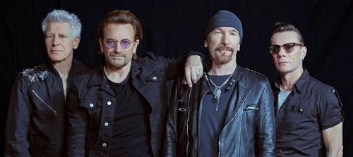
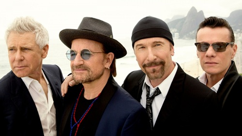
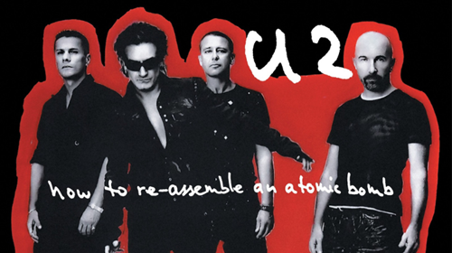
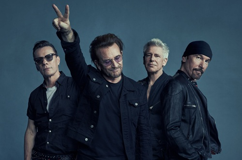

O U2 foi formado no Mount Temple Comprehensive School, quando os membros ainda eram adolescentes e com conhecimento musical limitado. Após quatro anos, eles assinaram com a gravadora Island Records e lançaram seu primeiro álbum, Boy (1980). Seu terceiro álbum, War (1983), rendeu-lhes o primeiro álbum a alcançar a posição de número 1, no Reino Unido. Hits como "Sunday Bloody Sunday" (1983) e "Pride (In the Name of Love)" (1984), ajudaram a estabelecer a reputação da banda como um grupo politicamente e socialmente consciente. Em meados da década de 1980, tornaram-se famosos por sua participação em concertos, destacando-se na atuação do Live Aid (1985).
|  |  |  |  |